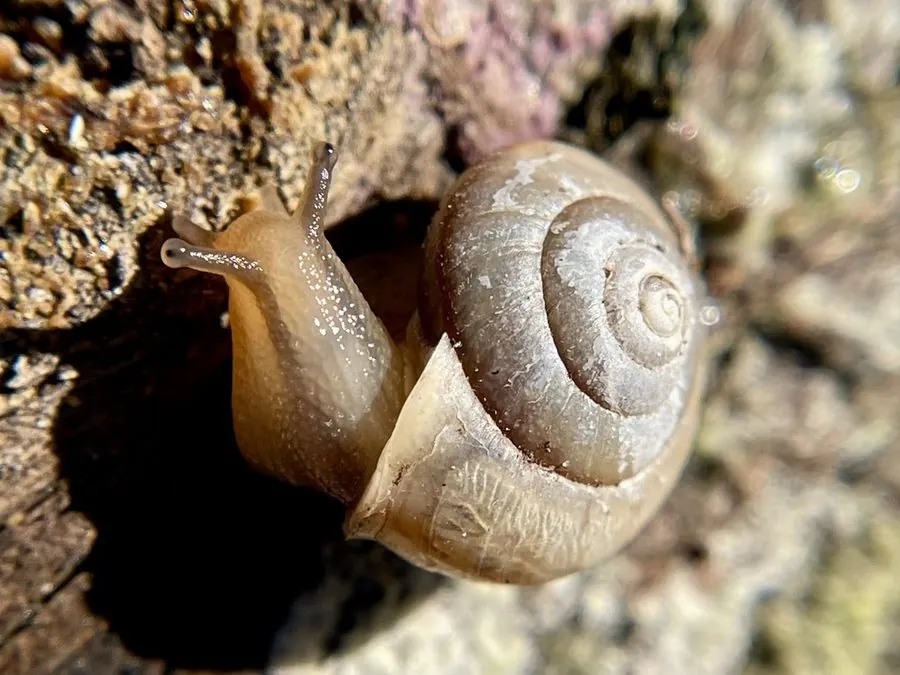

软体动物 · 动物界
江西巴蜗牛 Bradybaena kiangsiensis

中国南方常见的陆生蜗牛，壳比灰巴蜗牛更扁更薄，壳面有细致生长纹，雨后常在草丛和菜地间活动。
- 分类
- 门软体动物门纲腹足纲目柄眼目科巴蜗牛科属巴蜗牛属
- 栖息环境
- 草丛、菜地、茶园、果园和林下落叶层等温暖潮湿处
- 地理分布
- 中国长江以南地区，以江西、湖南、福建、广东、广西较常见
- 保护级别
- 尚无保护级别；为常见农业和园艺害虫
物种志
江西巴蜗牛的贝壳呈扁圆球形，壳径约两厘米，壳质薄而脆，壳面呈黄褐至灰褐色，具细密的生长纹和一条不明显的深色带，螺层约五至六层，壳顶低平，壳口半月形，唇缘薄。身体灰黄色，触角两对，后触角顶端有眼。它靠足部分泌的黏液滑行，爬过的地方留下亮痕。与灰巴蜗牛相比，它的壳更扁、更薄，壳色偏黄，壳口的唇缘也没有明显外翻。
它分布于中国长江以南地区，以江西、湖南、福建、广东、广西等地较常见，栖息在草丛、菜地、茶园、果园和林下落叶层，喜欢温暖潮湿的环境，多在夜间和雨后活动。它以植物叶片、嫩芽和腐殖质为食，是农业和园艺上的害虫，也可能作为某些寄生虫的中间宿主。雌雄同体，异体受精，春秋两季产卵于松土和落叶下。防治以人工捕捉、清除杂草和诱杀为主，目前尚无保护级别。
形态与习性
- 食性取食植物叶片、嫩芽和腐殖质
- 壳径约两厘米，壳薄而扁，黄褐色
- 习性昼伏夜出，雨后活动频繁
- 繁殖雌雄同体，春秋两季产卵于松土下
- 分布中国长江以南，江西、湖南、福建等地常见
- 危害取食菜苗和花卉，为园艺害虫
趣味知识
- 江西巴蜗牛的壳比灰巴蜗牛更扁更薄，轻轻一捏就容易碎。
- 它喜欢在雨后的草丛里活动，天晴后很快又躲回落叶层下。
- 它的卵是乳白色的小圆球，常成堆埋在松软的泥土里。